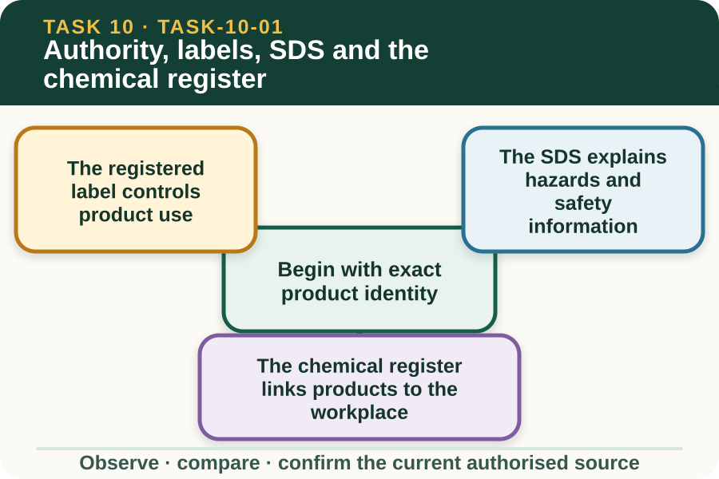
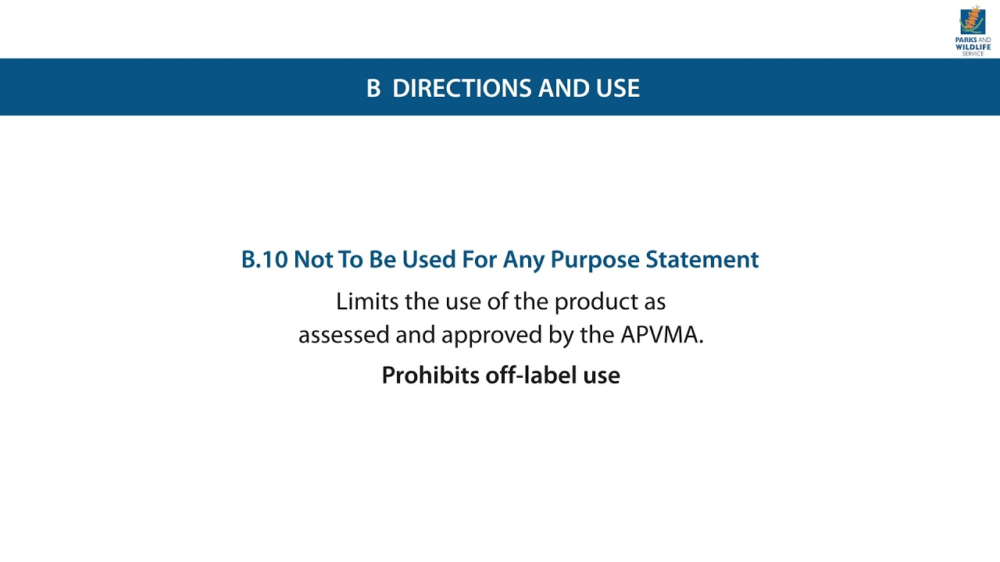

Learning purpose
Locate the source that controls each product-specific question and distinguish label, SDS and workplace records.
Task 10 · Lesson 1 of 4
Locate the source that controls each product-specific question and distinguish label, SDS and workplace records.
Learning purpose
Locate the source that controls each product-specific question and distinguish label, SDS and workplace records.
Success criteria
Learning boundary
Supplementary learning and formative practice only. Current RTO assessment, local procedures and authorised supervision control real work.

Chemical information is product-specific. A similar container colour, brand family or remembered name is not enough to establish that a document belongs to the item in front of the worker.
Record the exact identity details visible on the teacher-supplied fictional item or document set, then match them through the authorised workplace system. If identity cannot be confirmed, the learner keeps the item outside the planned task and refers the uncertainty.
The current registered label is the controlling product source for authorised uses, restrictions and directions. A summary sheet, old presentation or memory may help a learner locate a topic, but it cannot replace the current label.
Source literacy means locating the relevant label section and reporting what question it answers without turning the website into a product instruction. Every real decision remains with the supervisor applying the current document and local requirements.
A safety data sheet, or SDS, organises information about a product's hazards, safe management and emergency information. It supports workplace risk controls and should be matched to the exact product and checked for currency.
The SDS and label have related but different roles. When a learner needs a product-specific safety answer, they should identify the correct section and take it to the authorised person rather than paraphrasing an old classroom note as a direction.
A workplace chemical register identifies chemicals held or used at that workplace and connects them to current supporting information. It helps workers and supervisors know what is authorised, where the controlled documents are found and whether an entry needs review.
A public learning site must not copy a real workplace register. Learners can practise with fictional entries that contain no business, storage, supplier or worker details.
Fictional worked example
Observed evidence: In a fictional source pack dated 12 February 2027, Kai finds a container image labelled Field Product Q, an SDS for Field Product Q, a register entry for Field Product R and an undated classroom summary. Decision and reason: Kai does not combine the documents because the register identity conflicts and the summary has no currency evidence. Safe action: Kai records the exact mismatch and refers the pack to the supervisor without proposing product use. Result: The supervisor confirms that the wrong register page was supplied and retrieves the current authorised record. Next check or record: Kai notes which source answered identity, product-use and hazard-information questions, while leaving all real directions to the current documents.
A document should show enough identifying information to establish what it is, which product it covers, who issued it and whether it is current for the workplace. A file that looks professional can still be out of date or belong to another product.
Do not silently replace or edit a controlled document. Preserve the version seen, identify the discrepancy and use the local process to obtain the current source from the authorised owner.
Different questions belong to different sources: product use belongs to the current label, hazard information belongs to the matched SDS, workplace holdings belong to the register, and local roles and approvals belong to workplace procedures and the supervisor. Current weather information controls the weather evidence used for a real task review.
When sources appear to disagree, stop at the information gap. State the exact question and conflicting details so the authorised person can resolve them without having to reconstruct the entire task.

External media loads only after you choose it.
Source-linked video
Why watch: Practise locating information by heading without selecting a product or creating an application instruction.
Watch for: Which label section answers a product-specific question, and when would the SDS or workplace register still be needed?
Formative practice
Each option explains the consequence. These answers save only on this device.
Written application
Apply and keep a learning record
Use a fictional teacher-prepared document set. Place each source beside the question it controls, circle mismatched identity or missing currency details and draft one concise referral. Do not reproduce or interpret operational directions.
Learning record: A supplementary-learning matrix showing product identity, source role, currency and referral points.
Lesson responses and the activity are formative learning only. Formal sufficiency and competence remain with the current RTO process.
Source basis: AHCCHM201 Release 1 source and supervision requirements, the NESA Chemicals focus area and authorised teacher-posted chemicals notes. The current registered label, matched SDS, workplace register, local procedures and supervisor control every real task.